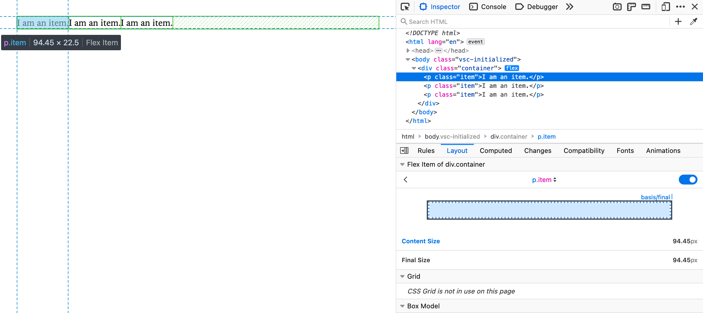
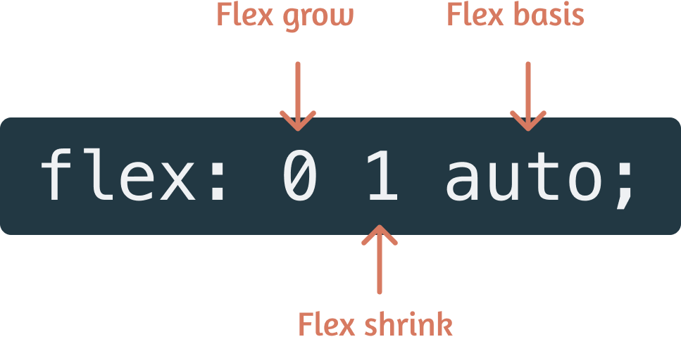
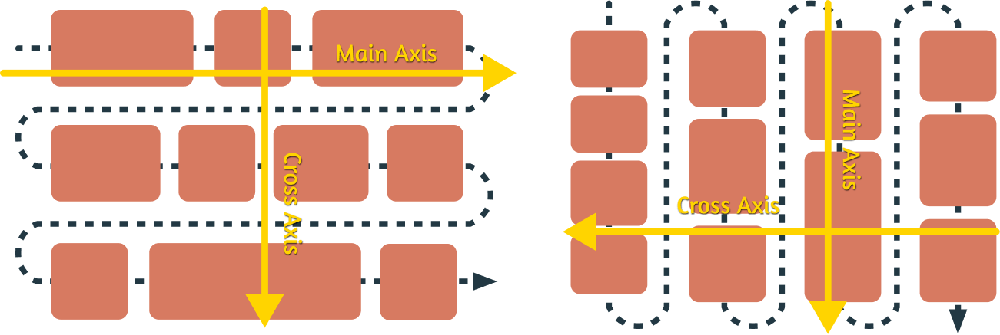
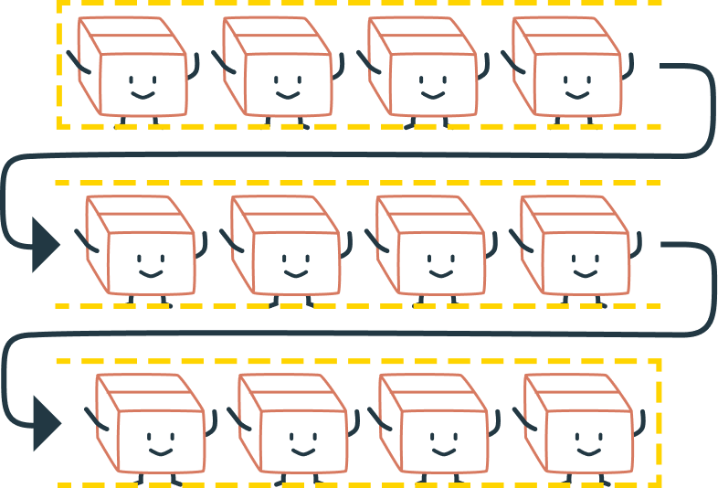
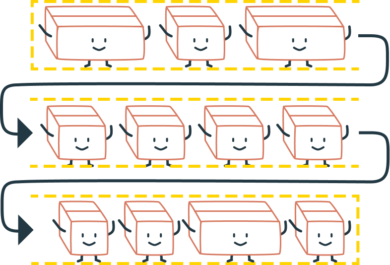
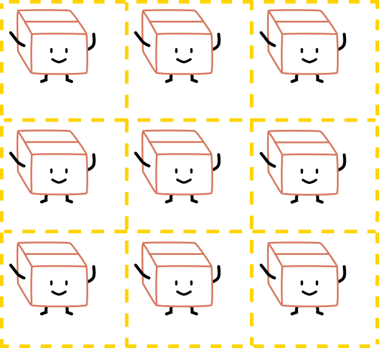
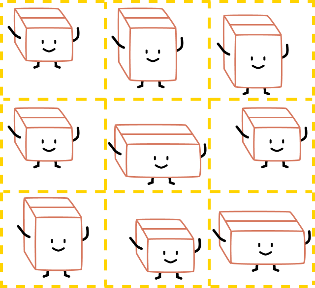
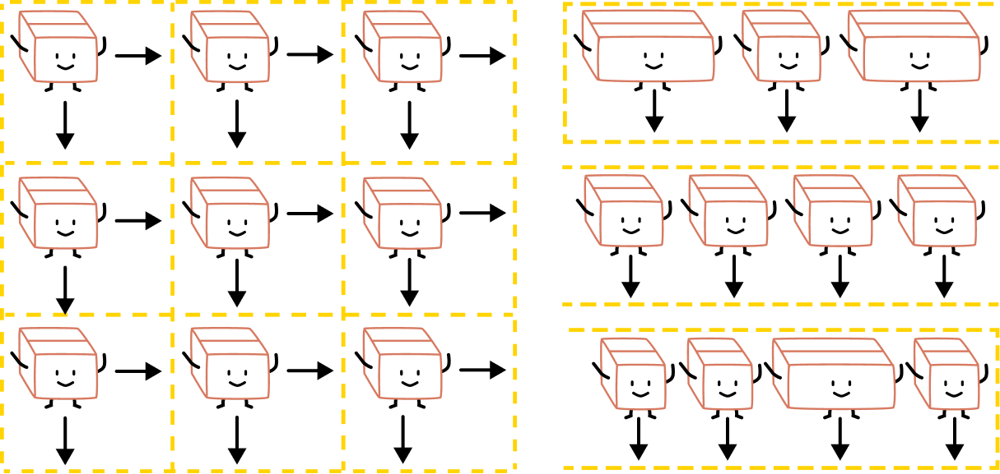

A deep dive into Flexbox and Grid
By Chen Hui Jing / @hj_chen
Screens, screens, screens

Image credit: Jyotika Sofia Lindqvist
Layout technique: float
Item A
Item B
Item C
Layout technique: inline-block
Item A
Item B
Item C
The parent-child relationship
Layout technique: flex
A flex item
Another flex item
Flex items are also flex children
All direct children of the flex container become flex children
Flex formatting context
Flexbox devtools
The flex property

Sizing in flexbox
Flex directions
No actual grid
 Real two-dimensional awareness
 Layout technique: grid
Item A
Item B
Item C
Item D
Item E
Item F
A better way of building grids
The magic sauce
No, just kidding. It's just that alignment really ties it all together.
Box alignment properties
| Property | Axis | Aligns | Applies to |
|---|---|---|---|
justify-content |
main/inline | content within element  |
block containers, flex containers and grid containers |
align-content |
cross/block | ||
justify-items |
inline | items inside box |
block containers and grid containers |
align-items |
cross/block | flex-containers and grid-containers |
|
justify-self |
inline | element within parent  |
block-level boxes, absolutely-positioned boxes and grid items |
align-self |
cross/block | absolutely-positioned boxes, flex items and grid items |
Can we put it all together?
Thank you!


Font is Fengardo Neue by Loïc Sander.